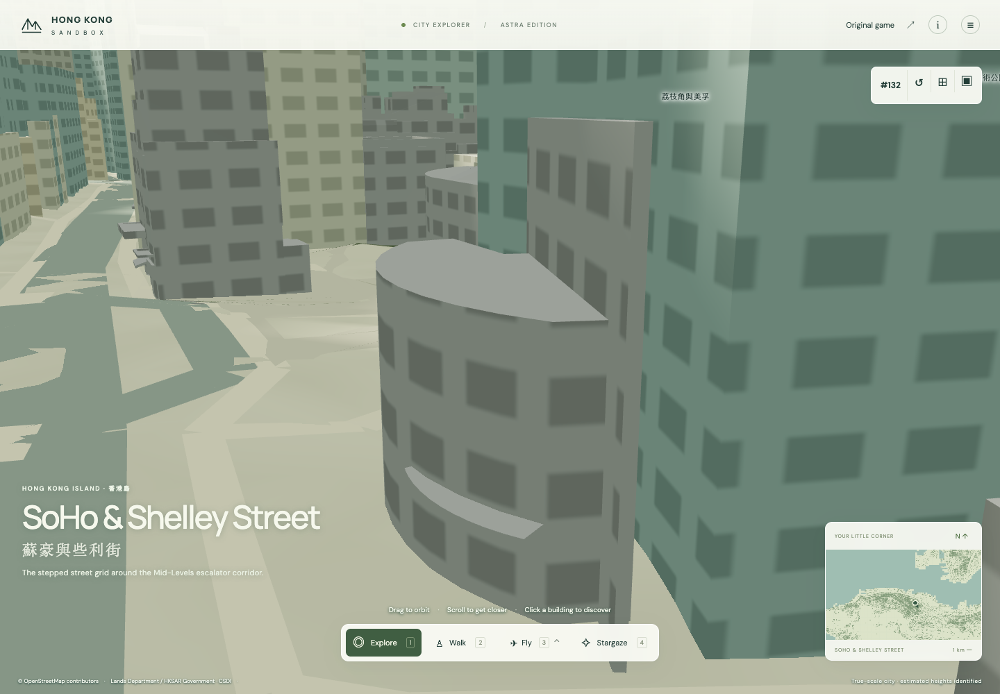
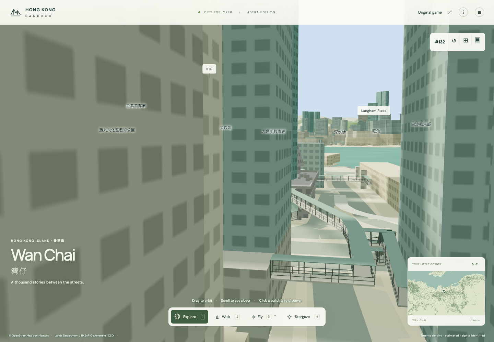
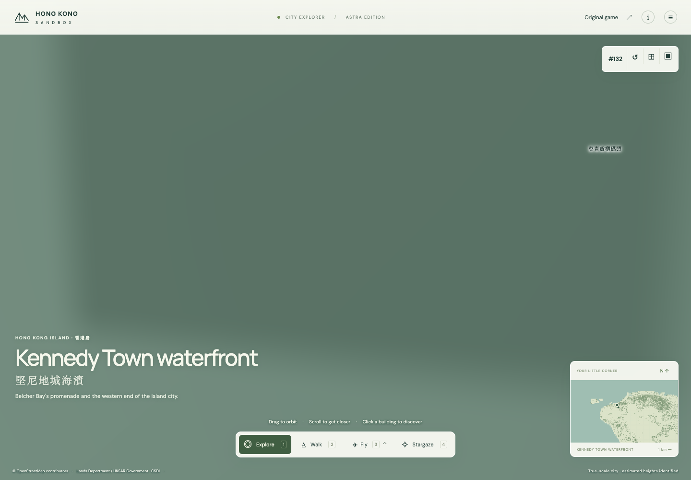
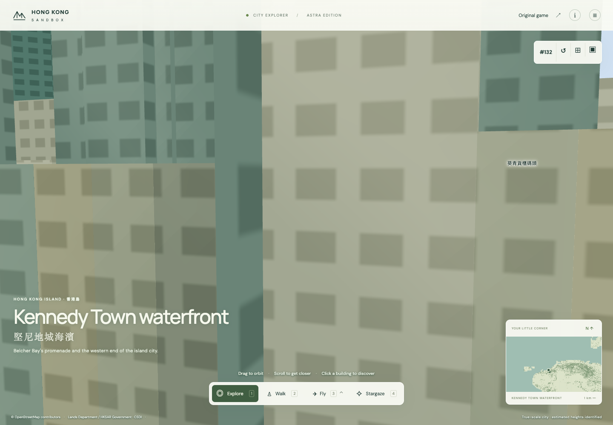
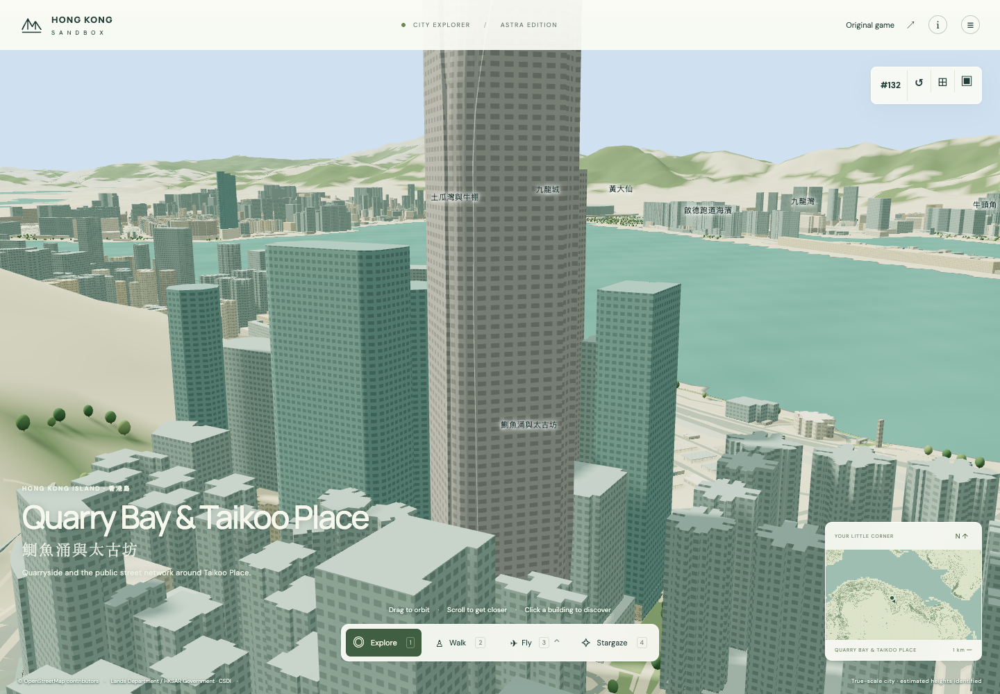
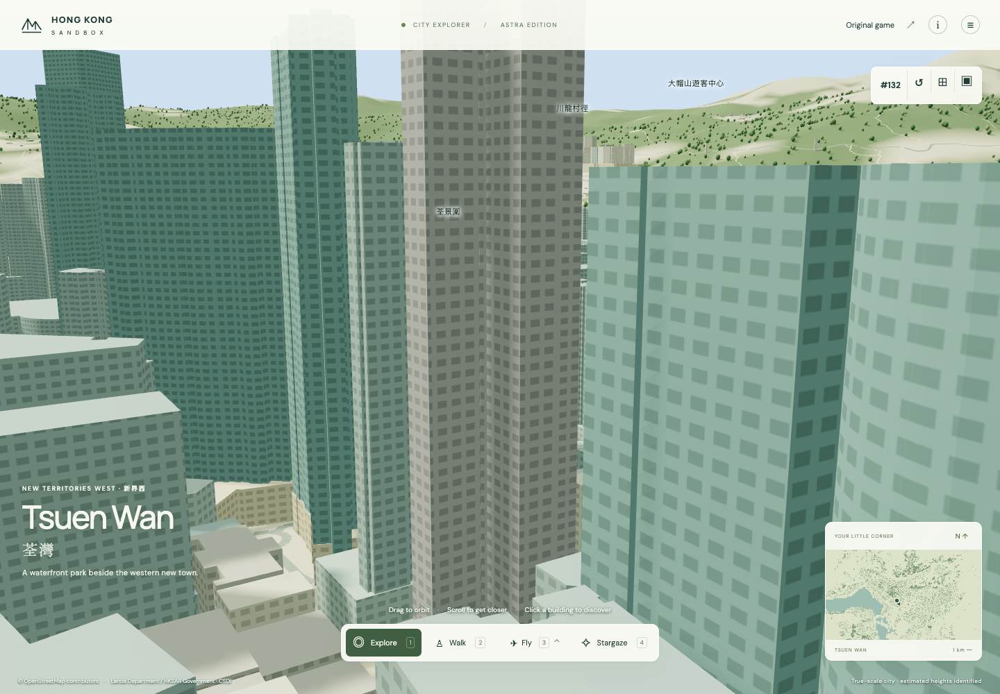

<!doctype html><meta charset="utf-8"><style>body{margin:15px;font:15px sans-serif;background:#eef1ed}main{display:grid;grid-template-columns:1fr 1fr;gap:10px}figure{margin:0;background:white}img{width:100%;height:345px;object-fit:contain}figcaption{padding:5px}</style><main><figure><figcaption>THE CENTER · landsd/101313:0</figcaption></figure><figure><figcaption>SUN HUNG KAI CENTRE · landsd/102532:0</figcaption></figure><figure><figcaption>CADOGAN · landsd/104716:0</figcaption></figure><figure><figcaption>MANHATTAN HEIGHTS · landsd/114461:0 · landmark membership still proposed</figcaption></figure><figure><figcaption>One Island East · landsd/21661:0</figcaption></figure><figure><figcaption>Indi Home · landsd/219092:0</figcaption></figure></main>